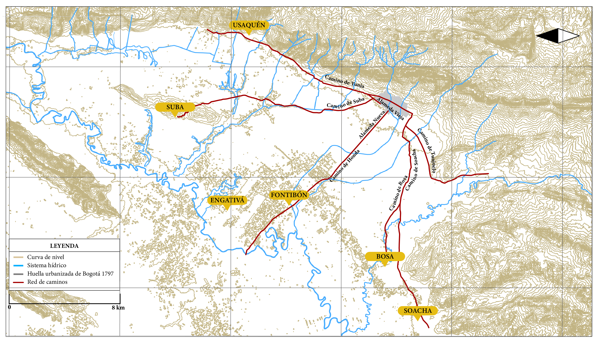
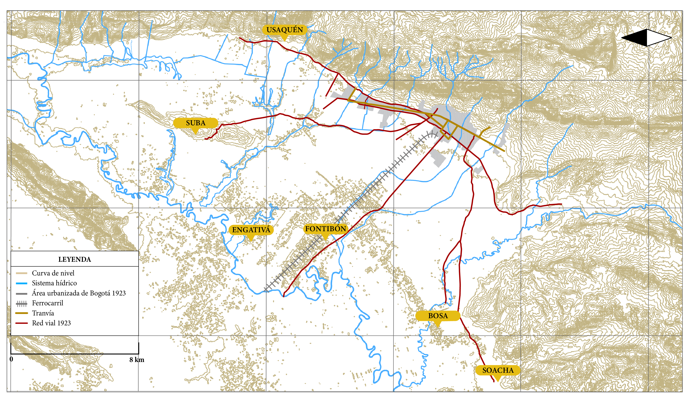
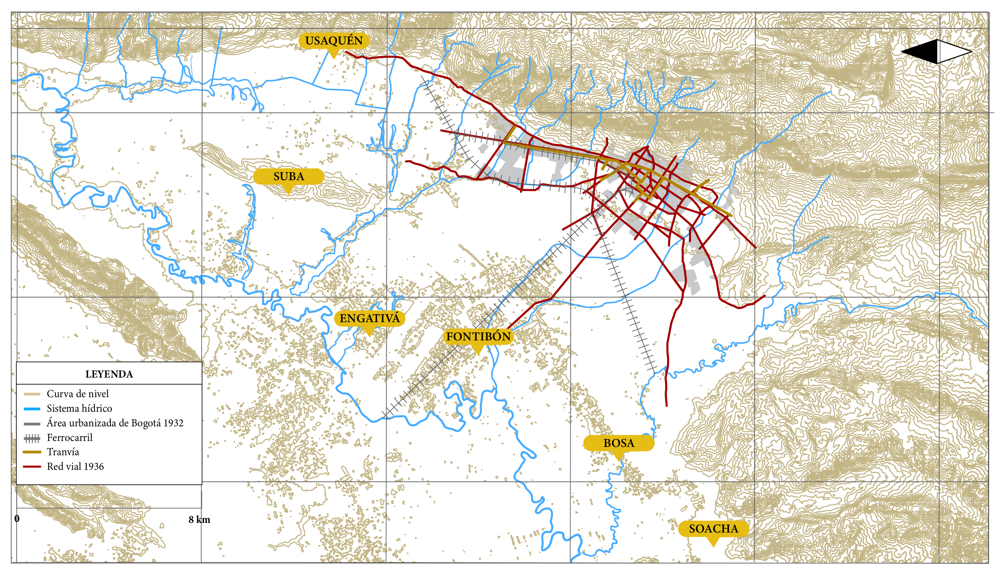
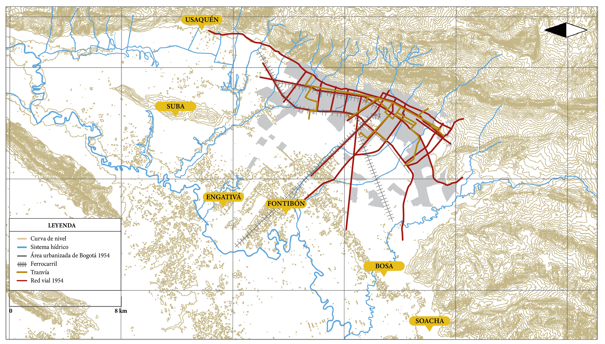
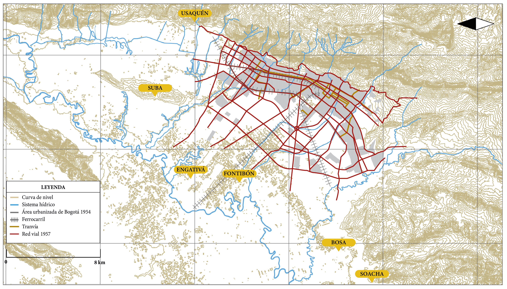
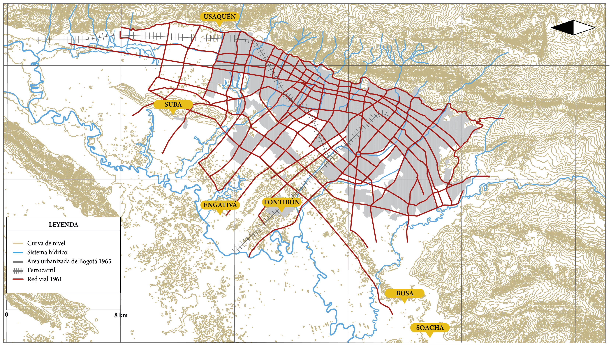
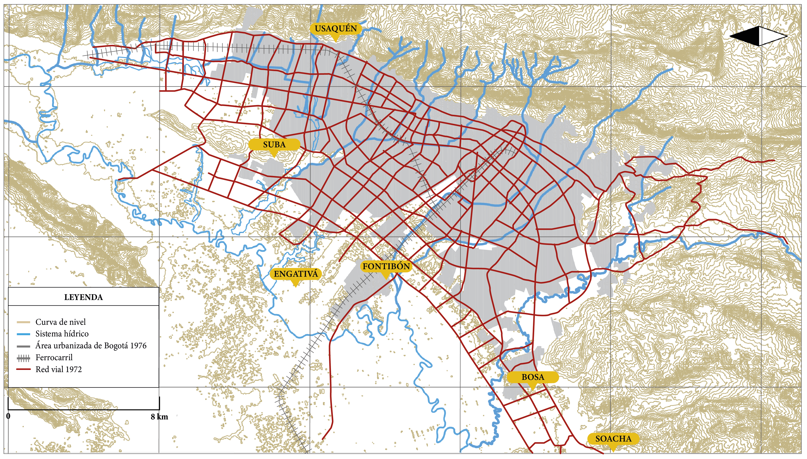
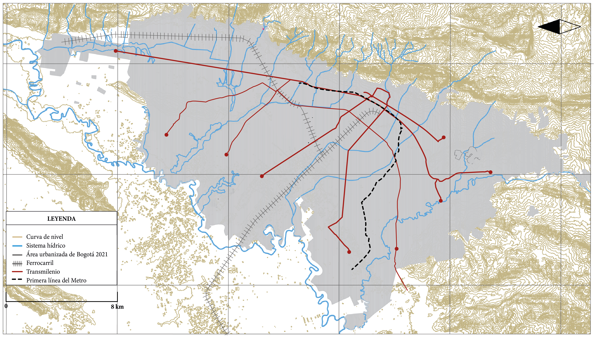

Las principales vías construidas por los españoles durante la Conquista y la Colonia se trazaron sobre la red de caminos por los muiscas, un sistema que se mantuvo hasta bien entrado el siglo XIX. Desde comienzos del siglo XX, el sistema vial se consolidó, en términos generales, como el eje estructurante del desarrollo urbano.
En la actualidad, Bogotá cuenta con una red vial de aproximadamente 15 200 km-carril, equivalente a un área de 52 millones de metros cuadrados, que representa el 13,5 % del área urbana total. Para dimensionar esta magnitud, se puede calcular que sí la distancia por carretera entre Bogotá y la costa Caribe colombiana es de unos 960 kilómetros, la red vial de la ciudad equivaldría aproximadamente a cuatro autopistas de doble calzada, en ambos sentidos, entre ambos puntos. 1
Ilustración 1. Red de caminos de Santafé, 1797

Fuente: Elaboración Sociedad de Mejoras y Ornato de Bogotá con base en Plano de tenencia de la tierra Santafé, Bogotá y aledaños 1850 a 1875 de Juan Carrasquilla. Quintas y Estancias de Santafé de Bogotá (Bogotá: Banco Popular, 1989), 189.Ilustración 2. Red vial de Bogotá, 1923

Fuente: Elaboración Sociedad de Mejoras y Ornato de Bogotá con base en Germán Mejía Pavony. Atlas histórico de Bogotá cartografía 1791-2007 (Bogotá: Editorial Planeta, 2007), 77.Ilustración 3. Plan vial Bogotá, 1936

Fuente: Elaboración Sociedad de Mejoras y Ornato de Bogotá con base en Germán Mejía Pavony. Atlas histórico de Bogotá. Cartografía 1791-2007 (Bogotá: Editorial Planeta, 2007), 83; y Centro de Investigaciones para el Desarrollo-CID. Alternativas para el desarrollo urbano de Bogotá D. E. Estudios e informes de una ciudad en marcha. Tomo I (Bogotá: CID, 1969), 226.Ilustración 4. Plan vial Bogotá, 1954

Fuente: Elaboración Sociedad de Mejoras y Ornato de Bogotá con base en Germán Mejía Pavony. Atlas histórico de Bogotá. Cartografía 1791-2007 (Bogotá: Editorial Planeta, 2007), 119; y Centro de Investigaciones para el Desarrollo-CID. Alternativas para el desarrollo urbano de Bogotá D. E. Estudios e informes de una ciudad en marcha. Tomo I (Bogotá: CID, 1969), 223.Ilustración 5. Plan vial Bogotá, 1957

Fuente: Elaboración Sociedad de Mejoras y Ornato de Bogotá con base en Germán Mejía Pavony. Atlas histórico de Bogotá. Cartografía 1791-2007 (Bogotá: Editorial Planeta, 2007), 119; y Centro de Investigaciones para el Desarrollo-CID. Alternativas para el desarrollo urbano de Bogotá D. E. Estudios e informes de una ciudad en marcha. Tomo I (Bogotá: CID, 1969), 223.Ilustración 6. Plan vial Bogotá, 1961

Fuente: Elaboración Sociedad de Mejoras y Ornato de Bogotá con base en Germán Mejía Pavony. Atlas histórico de Bogotá. Cartografía 1791-2007 (Bogotá: Editorial Planeta, 2007), 127; y Centro de Investigaciones para el Desarrollo-CID. Alternativas para el desarrollo urbano de Bogotá D. E. Estudios e informes de una ciudad en marcha. Tomo I (Bogotá: CID, 1969), 224.Ilustración 7. Plan vial Bogotá, 1964
 Fuente: Elaboración Sociedad de Mejoras y Ornato de Bogotá con base en Germán Mejía Pavony. Atlas histórico de Bogotá. Cartografía 1791-2007 (Bogotá: Editorial Planeta, 2007), 127; y Centro de Investigaciones para el Desarrollo-CID. Alternativas para el desarrollo urbano de Bogotá D. E. Estudios e informes de una ciudad en marcha. Tomo I (Bogotá: CID, 1969), 225.
Fuente: Elaboración Sociedad de Mejoras y Ornato de Bogotá con base en Germán Mejía Pavony. Atlas histórico de Bogotá. Cartografía 1791-2007 (Bogotá: Editorial Planeta, 2007), 127; y Centro de Investigaciones para el Desarrollo-CID. Alternativas para el desarrollo urbano de Bogotá D. E. Estudios e informes de una ciudad en marcha. Tomo I (Bogotá: CID, 1969), 225.
Ilustración 8. Plan vial Bogotá, 1972

Fuente: Elaboración Sociedad de Mejoras y Ornato de Bogotá con base en Germán Mejía Pavony. Atlas histórico de Bogotá. Cartografía 1791-2007 (Bogotá: Editorial Planeta, 2007), 141; y Banco Internacional de Reconstrucción y Fomento. Plano anexo Informe técnico sobre el estudio de desarrollo urbano de Bogotá, Fase II (Bogotá: 1972).Ilustración 9. Plan vial Bogotá, 1979
 Fuente: Elaboración Sociedad de Mejoras y Ornato de Bogotá con base en Germán Mejía Pavony. Atlas histórico de Bogotá. Cartografía 1791-2007 (Bogotá: Editorial Planeta, 2007), 141; y plano reglamentario del Acuerdo 7 de 1979.
Fuente: Elaboración Sociedad de Mejoras y Ornato de Bogotá con base en Germán Mejía Pavony. Atlas histórico de Bogotá. Cartografía 1791-2007 (Bogotá: Editorial Planeta, 2007), 141; y plano reglamentario del Acuerdo 7 de 1979.
Ilustración 10. Plan vial Bogotá, 2021
 Fuente: Elaboración Sociedad de Mejoras y Ornato de Bogotá con base en Plano cu-4.4.3 “Sistema de movilidad-red vial” del Decreto 555 de 2021.
Fuente: Elaboración Sociedad de Mejoras y Ornato de Bogotá con base en Plano cu-4.4.3 “Sistema de movilidad-red vial” del Decreto 555 de 2021.
Ilustración 11. Red Transmilenio y metro, 2021

Fuente: Elaboración Sociedad de Mejoras y Ornato de Bogotá con base en Plano cu-4.4.3 “Sistema de movilidad-red vial” del Decreto 555 de 2021.Las primeras formas de trasporte en la ciudad son: peatones, carruajes y coches de tracción animal para el traslado de pasajeros. Después, el tranvía tirado por mulas, en 1884, la Empresa del Tranvía Municipal y el tranvía eléctrico, en 1910. Los hechos del 9 de abril de 1948 y la finalización del servicio en 1951.
El proceso de modernización del tranvía municipal incluye: los Trolleys (trolebús, 1946) y los buses a gasolina, la Empresa de Buses del Distrito Especial de Bogotá, 1958, la empresa Distrital de Transportes Urbanos-EDTU, 1959, y su liquidación, en 1991.
Nuevos desarrollos de las empresas de trasporte privado hacen referencia al servicio de buses de carácter privado, su inicio, desarrollo y expansión de las compañías, sociedades limitadas, sociedades anónimas y cooperativas de transporte, como medio alternativo de movilidad.
Otra fase clave del desarrollo del servicio de transporte, son los primeros autobuses particulares y de algunas empresas de trasporte público urbano. Los sistemas de movilización del parque automotor de buses en la ciudad y las deficiencias del servicio público, tarifas, subsidios y la llamada “guerra del centavo”.
La siguiente etapa es el desarrollo del Transmilenio, el Sistema Integrado de Transporte Público (SITP), las rutas de las troncales, zonales y alimentadores, la búsqueda de una movilidad más limpia, y La Rolita, operadora de transporte multimodal. Además, el Metro y el Regiotram.
En la descripción de las actividades de las empresas de buses intermunicipales dentro del perímetro urbano, deben tenerse en cuenta: el Terminal Salitre, Terminal del Sur y Terminal del Norte, así como los servicios intermunicipales en Sabana norte, Sabana occidente y Soacha. Así mimo, el desarrollo de TransMiCable y su primera línea en 2018 (Ciudad Bolívar), y proyectos futuros como: la segunda línea, San Cristóbal, la tercera línea, el sector de Potosí y Ciudad Bolívar. Por último: la bicicleta, las bicicletas eléctricas, la Ciclovía y las Ciclorrutas.
1.1. Antecedentes
La introducción de nuevos hábitos y gustos a partir de la segunda mitad del siglo XIX trajo consigo una nueva noción sobre el espacio público. En el caso de las calles y las viejas alamedas, se manifestó un interés por romper con el modelo heredado de la Corona española y también por una nueva noción de higiene pública. Paulatinamente, se buscó modificar la apariencia de las vías principales y centrales, poco a poco se fue incorporando el nuevo sistema de alcantarillado, se suprimieron los caños centrales y se mejoró el aspecto de las cunetas.
Se adelantaron labores para implantar una nueva nomenclatura que también incluía la asignación de nuevos nombres, entre ellos, los de algunos de los héroes y lugares donde se libraron batallas por la gesta por la Independencia, como fue el caso de la alameda vieja por la Avenida Boyacá. Igualmente, existió una preocupación estética y técnica sobre las viejas calzadas por mejorar sus deterioradas condiciones, por lo que se desarrollaron obras para revestirlas con nuevos empedrados de cantos rodados y luego adoquinados; sobre algunas se emplearon ladrillos y pavimento de asfalto. Por su parte, los andenes tomaron protagonismo sobre el tejido urbano y se revistieron con lozas en piedra arenisca.
La apariencia de las calles y avenidas incluyó propuestas de mobiliario urbano novedoso, se instalaron bancas y postes de luz eléctrica, se dio inicio a algunos programas de arborización y a la instalación de monumentos sobre el espacio público.
Pese a la existencia de diversas iniciativas renovadoras para transformar la fisionomía de Bogotá, durante las dos últimas décadas del siglo XIX todavía permanecían vigentes prácticas y hábitos heredados de la ciudad colonial. Entre ellos, la experiencia y las formas de trasporte para recorrer distintos sectores de la urbe, que fue registrada por pintores como Ramón Torres Méndez, José María Paz y Joseph Brown. En sus obras persistían los peatones sumados a los carruajes y coches de tracción animal, bien fueran asnos, bueyes, mulas, asnos y caballos, que predominaban como medio de transporte para recorrer el centro urbano y conectar con los diferentes sectores de la periferia, junto a las áreas y pueblos aledaños.
Otro aspecto, no menos importante, fue la lenta apertura del país al comercio internacional, desde el decenio de 1840. A partir de ese momento se generó una preocupación por mejorar las condiciones materiales de la red de caminos próximos a la ciudad, que se materializó en inversiones de carácter público y privado que buscaban mejorar los caminos que conectaban a la capital con el puerto fluvial de Honda. Asimismo, con la población de Soacha, la carretera Central del Norte y el camino de Oriente, como respuesta al aumento en la circulación de mercancías y de viajeros. Un hito importante fue la llegada del ferrocarril a Bogotá, el 20 de julio de 1889.
Por otra parte, el centro de la ciudad se caracterizó por presentar dos tipos de transporte: el primero, asociado al traslado de mercancías y comercio con los sectores de abastecimiento, especialmente en la zona de San Victorino. El segundo, vinculado a algunos coches de uso particular y carrozas de alquiler. Acerca de los inicios del servicio de transporte colectivo, según Luis Enrique Rodríguez Baquero y Saydi Núñez Cetina:
En 1846 llegaron los primeros carros de tracción animal que eran halados por mulas y bueyes, pero fue en 1851 que se instaló por primera vez un sistema de transporte colectivo de personas. Los carros se convirtieron en carruajes y transportaban grupos de hasta diez personas en 1876, la Alcaldía creó el primer plan organizado de movilización de pasajeros a cargo de la compañía franco-inglesa Alford y Gilide. Era el mismo sistema de carruajes, pero organizado y administrado por la compañía (que permaneció vigente hasta 1882)” 2. En este sentido, Ricardo Esquivel señalaba que en 1865 funcionaba la Compañía de Omnibus i Transportes, que ofrecía carros fuertes para mercancías, carruajes, coches y victorias 3. Mientras que, Ricardo Motezuma, mencionó que “circulaban varias clases de vehículos de transporte de pasajeros, tales como: carrozas, berlinas, landós, victorias y cupés. Estos coches estaban destinados, en su mayoría, al transporte “interurbano” 4.
A pesar de los decididos avances presentados en favor de la movilidad urbana, con la implementación del servicio del tranvía de mulas, conocido como el ferrocarril urbano, se presentaría el primer intento por modernizar el transporte de Bogotá que, también sería el primero de su tipo en el país. Se transformó en un modelo que aumentó el número de pasajeros movilizados en cada recorrido y alteró notablemente los horarios y hábitos de los residentes. Logró modificar la noción y la relación entre los distintos sectores de la ciudad, generando una nueva percepción de las distancias entre el centro urbano y la periferia. Se convirtió, así, en referencia de modernidad de la ciudad decimonónica, como se evidencia, por ejemplo, en las fotografías realizadas por Henri Duperly 5.
La implementación del tranvía se convirtió en un factor que generaría renta y/o especulación en la finca raíz, sobre las franjas aledañas inmediatas a sus líneas de recorrido y zonas de influencia. Debido a que “[…] indujo un cambio en el modelo de ciudad, de un área pequeña con alta densidad, de forma oval y construida al lado de los cerros orientales, a una ciudad lineal de forma semi oval, con baja densidad, que incorporaría cada vez más a pobladores rurales en la dinámica urbana” 6. Acerca del sector de Chapinero y su conexión con el centro de la ciudad, Ricardo Montezuma, señala:
Éste se convirtió en una especie de motor que impuso la expansión urbana hacía el norte, así, la ciudad pudo definitivamente salir de esa “muralla” que por muchos siglos le habían impuesto factores estructurales, económicos, inmobiliarios, hidrográficos y topográficos, entre otros. El trazado del tranvía produjo una revaluación de la relación de la ciudad con su medio ambiente y su territorio, produciendo una tensión urbana entre el centro y Chapinero a 6 Km. de distancia, la cual originó el eje de desarrollo sur-norte. En este sentido se orientó durante mucho tiempo, parte del proceso de urbanización. La conexión del centro con Chapinero convierte. este lugar “satélite” de residencias secundarias —villas o quintas— en un barrio de Bogotá 7 .
El primer sistema masivo de transporte de Bogotá se estableció justo cuando la ciudad comenzaba a experimentar cambios significativos como la implementación de los servicios públicos y la creciente expansión demográfica, que requerían mejoras en el sistema de transporte urbano. Fue contratado por el Estado de Cundinamarca con el cónsul norteamericano en Barranquilla, William W. Randall, en el año de 1882.
El servicio se inauguró el 24 diciembre de 1884, con una línea entre el puente de San Francisco (que luego se extendería hasta la Plaza de Bolívar) hasta San Diego por la Calle Real (hoy carrera 7a con calle 26), donde tomaba el Camino Nuevo (carrera 13) hasta Chapinero, en una línea de un solo sentido con rieles de madera revestidos en metal (tirados por mulas) que comenzaba en la estación ubicada en la carrera 13 con calle 57, donde se situaba el depósito de tranvías 8.
Inicialmente, el servicio fue administrado por “The Bogotá City Railway Company”, desde el año de 1884 hasta 1910.
Años más tarde, hacia 1892, fueron remplazados los rieles de madera por rieles de metal. Igualmente, frente a la demanda que generó el servicio, se abrieron otras nuevas líneas, entre ellas una segunda línea que conectó la Plaza de Bolívar con la Estación de la Sabana. Con motivo de los festejos por la celebración del primer centenario de la Independencia, en 1910, la concesionaria norteamericana presentó como innovación el servicio de los primeros 6 carros eléctricos, que lentamente comenzaron a sustituir a los viejos tranvías de mulas 9.
Ese mismo año se materializaron una serie de quejas y protestas frecuentes sobre la calidad del servicio, como la deficiencia por la demora en los recorridos, desperfectos técnicos en los vagones, el mal trato hacia los animales de tiro y el hecho de que los carros estaban a merced de las condiciones del clima. A esto se sumó el incidente de un agente de policía con un niño que se subió a un carro sin pagar y que también involucró un ciudadano norteamericano, que finalmente llevaron al primer bloqueo por parte de los pasajeros que vivió la ciudad, conocido como el “boicot al tranvía”. Realizado entre el 7 de marzo y el mes de octubre de 1910, generó como propuesta de solución, luego de extensas negociaciones, que la municipalidad adquiriera la compañía propietaria, el 10 de diciembre de ese año, hecho que más tarde daría paso a la Empresa Municipal del Tranvía Municipal10 .
La municipalización del servicio llevó a la desaparición de los animales de tracción, la mejora en los modelos de la flota de los carros y los trazados de nuevas rutas que incluyeron a Las Cruces y el Cementerio Central. Así mismo, a la electrificación del servicio, y ajustes y extensión de las rutas iniciales, que, en todo caso, no alcanzaron a llegar en su totalidad a las nuevas aéreas de expansión urbana que se requerían. Entre los modelos de carros que fueron importados en la nueva etapa del tranvía, permanecieron dos en la memoria de la ciudad: las “nemesías”, que correspondían a un modelo importado en el año de 1921 por su gerente, Nemesio Camacho, y las “Lorencitas”, de 1936, llamadas así en honor a Lorencita Villegas, esposa del presidente Eduardo Santos 11.
Con el paso de los años el sistema del tranvía comenzó a presentar dificultades que, entre otras, se originaron por la competencia generada por el aumento de los buses que comenzaban a circular por la ciudad, el marco normativo sancionado desde el Concejo Municipal, los altos costos de mantenimiento y la oposición de los transportadores frente a las distintas líneas del tranvía.
Entre 1942 y 1943 no se hizo modernización alguna de la flota. En 1948, durante la IX Conferencia Panamericana, se presentó el magnicidio de Jorge Eliecer Gaitán, ocurrido el 9 de abril, hecho conocido como “El Bogotazo”. Se quemaron edificios públicos y varias residencias, se presentaron saqueos a locales comerciales, daños y robos en el centro de la ciudad, falleció un número importante de personas y en medio de los disturbios, fueron quemados y destruidos cerca de 34 coches del tranvía en lugares emblemáticos como la plaza de Bolívar y la Avenida Jiménez. Estas acciones llevaron a que se generalizara el mito urbano que el tranvía había desaparecido con los hechos del 9 de abril de ese año. Sin embargo, el 70 % de la flota se conservó intacta 12.
Finalmente, durante la administración del alcalde Fernando Mazuera, que promovía el uso de autobuses, se adelantaron distintas medidas que terminaron por contribuir a la desaparición del tranvía. Se levantaron rieles en distintos sectores, fueron cerradas varias rutas y cedidas a empresas privadas, junto con las decisiones administrativas tomadas a lo largo del decenio de 1940 que, entre otras, redujeron gastos los gastos de infraestructura y en consecuencia, ya no se extendieron más líneas del sistema 13. El último recorrido fue realizado el 30 de junio de 1951, con la línea entre los barrios 20 de julio y Pensilvania 14. La desaparición del tranvía dio paso a que los empresarios privados prácticamente quedaran sin competencia alguna, “… paulatinamente se implantaría el sistema de buses como única forma de transporte masivo, con todas sus consecuencias”15 .
1.2. Avances en la movilidad
Bajo la lógica del discurso de progreso que buscaba mejorar los procesos de movilidad y como respuesta al a expansión que experimentaba Bogotá, surgió el Trolebús, también conocido con los nombres de sistema Trolley o Trolleys. La implementación de este servicio hizo parte de la modernización que experimentó el tranvía en la ciudad, por tal motivo, mediante el Acuerdo Municipal Número 10 de 13 de abril de 1946, el Concejo de la ciudad, autorizó a la Junta Directiva de las Empresas Municipales “para extender y modernizar los servicios del tranvía, empleando coches eléctricos de trolley, buses de gasolina y buses de aceite, según las necesidades y características de circulación de los distintos sectores de la ciudad”, y así mismo, “la adquisición de buses de trolley para hacer el recorrido de las vías en donde existe actualmente servicio de tranvía, sin extenderlo a otra u otras calles o avenidas”, buscando una adecuada respuesta ante la creciente demanda de los buses de servicio público de carácter privado.
Se tiene referencia de que hacía 1947, se iniciaron labores para extender los cables aéreos que se requerían para iniciar las operaciones de las primeras líneas, puesto que se alimentaban con energía eléctrica, iniciando actividades sobre la Avenida Caracas el 6 de octubre de 1948 16. Para el adecuado servicio se importaron modelos nuevos y de segunda mano desde Canadá, además de las ciudades de Greenville, Baltimore, Kansas City de Estados Unidos. Más tarde, desde Rumanía 17 , y en el año de 1967, desde Rusia, para cubrir la demanda de la ruta a Ciudad Kennedy 18.
Sin duda, el Trolley, como medio transporte, presentó una favorable acogida como alternativa para el transporte masivo urbano, ya que en el año de 1982 contaba con 114 kms de líneas extendidas. Sin embargo, con el paso de los años presentó inconvenientes relacionados con su mantenimiento, el cubrimiento de los gastos por los altos costos operativos, y las dificultades para competir frente al sistema de buses privados. Finalmente, el servicio dejó de circular hacía 1991 19.
En el decenio de 1950, la ciudad experimentó numerosos procesos de transformación. Uno de ellos fue el aumento de la población por causa de los fenómenos de migración que, entre otros, se presentó como respuesta a las escasas oportunidades en el campo y otras regiones del país. “Bogotá comenzaba a estructurarse como una ciudad dispersa, con muchos barrios alejados o aislados del centro de la ciudad, de los núcleos de actividad comercial, industrial, administrativa, y de los centros educativos” 20.
La expansión no planificada estimuló diferentes procesos de ocupación, que necesariamente no marchaban de la mano con los planes urbanos proyectados y las políticas de movilidad propuestas, como el Plan Piloto de Bogotá (1947-1951). Justo en este periodo de rupturas, la ciudad, en el año de 1954, cambió su estatus jurídico de municipio a Distrito Especial y se anexaron los municipios de Usaquén, Suba, Engativá, Fontibón, Bosa y Usme.
Durante las décadas de 1940 y 1950, también se hicieron evidentes los cambios que experimentaban los procesos de movilidad. Para ello, se desarrollaron diferentes proyectos viales bajo el influjo norteamericano que permitieron reducir los tiempos de movilidad y, en algunas oportunidades, se transformaron en ejes de conexión con las nuevas y futuras urbanizaciones, como fueron: la Autopista Norte (avenida de Los Libertadores), la avenida de Las Américas, la carrera Décima y la avenida del Aeropuerto Internacional, (calle 26).
Se identificaron las futuras conexiones viales por construir, como la ampliación de la carrera 3ª entres calles 15 y 26, la avenida de Los Comuneros (calle 6ª) y la avenida 1ª de Mayo. También se desarrollaron novedosos equipamientos de conectividad sobre el paisaje urbano, entre ellos, la calle 85 sobre el Antiguo Country, la calle 94 sobre El Chicó y el Park Way en La Soledad. Se trató del afán modernizador de una ciudad que buscaba mejorar las condiciones del tráfico, donde el automóvil particular fue el protagonista junto con los buses de las empresas privadas.
El transporte público también presentó grandes cambios. Luego de la liquidación de la Empresa Municipal del Tranvía de Bogotá, mediante el Decreto 529 de 1948 se estableció la Empresa de Buses de Bogotá D. E. Operó por un año y fue reemplazada por la Empresa Distrital de Transportes Urbanos-EDTU, constituida mediante el Acuerdo Municipal 5 de febrero 4 de 1959. Entre sus funciones se encontraba resolver la crisis financiera que presentaba el Distrito desde 1956, en el sector transporte. “En los primeros años de su funcionamiento, la empresa distrital mantuvo un papel importante en la prestación del servicio de transporte en la ciudad y limitó en muchos aspectos el poder de los agentes privados”. La empresa llegó a operar con 87 buses de diésel, 5 de gasolina y 25 trolley, y contaba con 13 rutas 21.
No obstante, pese a los esfuerzos realizados por recuperar su productividad y el déficit acumulado, la Empresa Distrital de Transportes Urbanos sería liquidada años después, por la falta de decisión política para competir frente a los operadores privados 22 .
1.3. La modernización del sistema de trasporte
No obstante, este modelo empresarial fue bastante perjudicial para el sector del transporte, en la medida en que atomizó la propiedad empresarial, con sus responsabilidades y las relaciones laborales y de subordinación que allí se desarrollaban, lo que fomentó la explotación y el trabajo a destajo, sin salario y solamente con un porcentaje de la recaudación.
Ya desde 1943, el alcalde Ernesto Sanz de Santamaría había propuesto un plan para municipalizar el transporte de la ciudad, que consistía en la compra y mejora de los buses privados existentes, adicional a la adquisición de 40 buses para las rutas de mayor demanda. Sin embargo, la movilización popular no permitió que el plan se llevara a cabo. Cabe destacar los vínculos eran emplazados entre los transportadores privados y el Partido Liberal, puesto que se consideraba que el tranvía era un fortín del proyecto conservador.
Durante la Segunda Guerra Mundial, las empresas de buses no lograron conseguir de forma regular los repuestos de sus vehículos, en particular de llantas y piezas importadas, dada la baja circulación de productos de consumo en Europa a causa de la alta demanda de la producción de armas. Sin embargo, las empresas municipales de Bogotá, específicamente el departamento del tranvía mostró un aumento en el número de carros en servicio y una recuperación frente a las empresas privadas, dada la operación con materiales refaccionados, la ampliación de los periodos de recambio, y el uso intensivo de rutas y materiales.
A causa de la migración de la población rural, proveniente de Tolima, Cundinamarca, Boyacá, Santander y Huila, hacia Bogotá, hubo una alteración notable en la estructura urbana, demográfica y social de la ciudad. En este contexto se proliferaron los barrios informales y autoconstruidos en las periferias, lo que fomentó la propagación del transporte informal como respuesta al aumento de la demanda. Este transporte tenía, naturalmente, una infraestructura y planeación muy deficientes.
Tanto a los sectores sociales tradicionales, que abandonaron el viejo centro de Bogotá y crearon nuevos barrios en la periferia, como aquella población flotante (generalmente desplazada), que se ubicó en los extramuros informales en barrios de ocupación y lotes clandestinos, encontraron rutas de buses que llegaban hasta estos sectores. “La Empresa Municipal, luego de la primera importación de ómnibus Mack, trajo los populares White, y las empresas privadas mantuvieron una constante importación de buses norteamericanos con carrocerías metálicas tipo “bus escolar”, de las fábricas Superior, Wayne, Oneida y Blue Bird”23 .
Para el año 1950, aún se evidenciaban los rezagos que dejó el 9 de abril de 1948. De las catorce rutas que atendía la Empresa Municipal de Transporte, nueve eran cubiertas con tranvías, dos contaban con trolebuses y tres con buses Mack. Sin embargo, las empresas particulares tenían más de 500 buses en servicio 24. En los años cincuenta, también aparecieron en la ciudad los “microbuses”, vehículos de marca Volkswagen que podían transportar hasta 10 pasajeros 25.
El 8 de enero de 1952, se constituyó la Sociedad Importadora y Distribuidora Automotora S. A. (Sidauto S. A.), con el objetivo de comercializar vehículos, repuestos y combustibles, pero en poco tiempo se solicitó una reforma estatutaria para convertirla en una empresa de transporte urbano, a la que ingresaron muchos de los socios y vehículos de la vieja Cooperativa de Buses. El 25 de noviembre de 1953, se expidió la licencia de funcionamiento de la Compañía Metropolitana de Transportes S.A., que tenía como actividad fundamental transportar pasajeros a los santuarios de Monserrate y la Peña, además de los terminales aéreos (primero al aeropuerto de Techo y luego al aeropuerto El Dorado).
A comienzos de 1954, se fundó la empresa Transportes Urbanos Samper Mendoza S.A. También ese año apareció la empresa Nueva Cooperativa de Buses Azules Ltda. Dos años después, el municipio empezó a cobrar impuesto al rodamiento y autorizó un alza en la tarifa de transporte que alcanzó los 15 centavos.
Las estadísticas de Conaltur, indican que, en 1968, Bogotá contaba con algo más de 3.000 buses particulares, en su mayoría construidos sobre chasis de camión con carrocerías tipo escolar y 100 buses municipales con chasis y carrocerías tipo urbano. La misma fuente indica que en 1978 existían 33 empresas de transporte que servían 327 rutas en la ciudad 26.
La dinámica de conformación de empresas urbanas y el notable crecimiento de sus parques automotores, evidenciaban que el futuro de la movilidad en Bogotá estaría marcado por la presencia de los buses como principal medio de transporte. Ello acompañado de unas condiciones de mercado más favorables para los buses particulares, dada su baja regulación, además de no incurrir en costos de construcción, mantenimiento de vías, seguros, ni prestaciones salariales, en los que sí estaba obligada a participar la empresa municipal.
La rapidez del crecimiento poblacional de Bogotá en la segunda mitad del siglo XX, superó todas las proyecciones de desarrollo de los servicios, incluyendo el transporte. El crecimiento espontáneo, acelerado y desordenado de la ciudad fue acompañado, casi simultáneamente, del transporte que paralelamente se extendió hasta los últimos rincones de la ciudad. “En 1977 la ciudad contaba con 24 721 buses, 4 128 busetas y 3 384 microbuses, organizados en una gran cantidad de empresas afiliadoras de vehículos” 27.
Pese a la expansión de la urbe durante estos años, el centro continuó siendo el principal destino del desplazamiento de los bogotanos. La carrera Décima fungió como eje de la gran variedad de rutas, lo que generó una congestión permanente, y lo mismo ocurrió con la carrera 13, la calle 68 y la avenida Caracas. Calles en las que la superposición de rutas y el modelo empresarial atomizado generaron una violenta competencia por los pasajeros llamada la “guerra del centavo”, una de las mayores causas de accidentalidad en Bogotá. Los datos recogidos por Ciro Durán en el documental La guerra del Centavo revelan que, en 1983 se presentaron 70 000 accidentes, 20 000 heridos y 4500 muertos, un promedio de 12 muertos diarios en el país, 4 de estos en Bogotá. Los datos demuestran que 36 de 40 choques con más de cinco muertos, fueron causados por el servicio público, 2 por automóviles particulares, y 2 por automóviles de servicio oficial 28.
Desde el punto de vista empresarial, se valoraba la eficiencia económica de los buses particulares, dado que transportar un alto número de pasajeros a menor costo garantizaba mayores ganancias para los conductores que, adicionalmente, solían ser los cobradores y los dueños de los autos. Sus ingresos eran directamente proporcionales a la cantidad de pasajeros que movilizaban. La guerra del Centavo, sumada a la ligereza de los métodos de mantenimiento de los vehículos, la utilización de materiales ensamblados localmente a bajo costo para carrocerías y asientos, y la alta ocupación en las vías a lo largo del día, generaron incentivos para que los transportadores de buses proliferaran sin garantías mínimas de seguridad para los pasajeros.
En 1966 se estableció el subsidio al transporte urbano a cargo del Tesoro Nacional, otorgado a los propietarios de buses que demostraran haber prestado el servicio al menos 21 días al mes, con un mínimo de tres recorridos completos por día en la ruta asignada. Su valor era igual para todas las ciudades, aunque en cada una variaba el número de recorridos a realizar. En 1968 se creó el Instituto Nacional del Transporte-INTRA, que estableció tarifas uniformes para el transporte urbano en las ciudades colombianas. Estas se fijaban sobre la base de los costos de una ruta promedio y a estos costos se le agregaba una partida de rentabilidad fijada por el gobierno 29. Por ese motivo, los buses subsidiados fueron pintados reglamentariamente con los colores anaranjado y crema. Sin embargo, el sistema de subsidios ocasionó que los propietarios disminuyeran el servicio hasta el límite previsto para recibir el subsidio, dado que el Estado demoraba y dificultaba los desembolsos.
Como respuesta a la alta inflación de mediados de los años setenta, el gobierno de Misael Pastrana creó la UPAC 30 e intentó no aumentar las tarifas ni los susidios al transporte. En 1975 se implementó un nuevo tipo de vehículo, dirigido al sector medio de la sociedad, que operó sin subsidio y con características especiales de confort para los usuarios: la buseta. Aunque desde los años 60 existían los “microbuses”, el nuevo vehículo era más grande que este, pero más pequeño que el bus, contaba con 28 puestos sin pasajeros de pie y el Estado permitía una tarifa 2,5 veces más alta que la de los buses que llevaban hasta 70 pasajeros, con la mitad de pie.
En la década de 1980, empezó a desmontarse el subsidio y en 1983 se estableció el Transporte sin Subsidio-TSS, con la incorporación de buses convencionales de último modelo, a los que se les asignó una tarifa semejante a la de las busetas. Para diferenciarlos de los buses subsidiados, que eran pintados de colores naranja y crema, estos fueron pintados de colores verde y amarillo. Al poco tiempo comenzaron a trasladarse buses del sistema subsidiado al sistema TSS, con el objetivo de desmontar progresivamente el subsidio y aumentar la tarifa permitida a los que pasaran de uno a otro grupo.
Entre 1971 y 1986 la oferta de asientos para pasajeros creció en un 120 %. Los buses aumentaron en un 57,4 % (2588 unidades) y las busetas en un 568 % (5061 unidades). En 1985 había en Bogotá 5952 busetas y 7094 buses, de los cuales 3111 eran TSS y 3983 subsidiados 31.
Las busetas cubrieron la demanda insatisfecha que estaban dejando los buses, transportando más pasajeros de los permitidos inicialmente. Paralelamente, creció el número de buses, ya que, a partir de 1976, el subsidio empezó a diferenciarse por modelos, siendo más alto para los modelos más recientes. Esto reforzó a los grandes propietarios con capacidad financiera para comprar nuevos vehículos a la vez que deshacerse de los buses viejos, que generalmente vendieron a los conductores.
Por otra parte, en la década de 1990, la buseta perdió presencia en la ciudad ante los buses ejecutivos que prometían agilidad, rapidez y comodidad, dada su amplitud. Estos buses transportaban más pasajeros y eran más rápidos en los recorridos. El llamado bus ejecutivo fue inicialmente la respuesta a la necesidad de transporte de barrios de estratos medios y medios-altos, hacia el centro de Bogotá. El primer servicio de este tipo se desarrolló entre Unicentro y Germania y estuvo a cargo de la Empresa Distrital de Transportes. No obstante, su éxito llevó a que en muy poco tiempo pasara de la empresa pública a la privada. A finales de los años ochenta, Sidauto inauguró el servicio ejecutivo y superejectivo a Cedro Bolívar, a Colina Campestre, y luego a Suba. No obstante, en poco tiempo, este servicio se desvirtuó y entró en la lógica de la “guerra del centavo”, con lo cual se perdió el régimen ordenado de paraderos que era la esencia de su servicio expreso.
En 1992, el Departamento Nacional de Planeación publicó el libro Transporte masivo en Bogotá, que describe la configuración de un transporte masivo moderno para Bogotá, con énfasis en la planificación urbana, capacidad técnica y sostenibilidad institucional. En este informe se describe la situación de la capital en los siguientes términos:
Para 1990 Bogotá y sus municipios aledaños contaban con 62 662 vehículos de transporte público, incluyendo buses ejecutivos, buses, busetas, microbuses, colectivos y taxis. Entre 1986 y 1990 la tasa promedio de crecimiento anual fue de 6,8 %. Teniendo en cuenta el lento crecimiento de la infraestructura vial, unas tasas de esta magnitud se constituyen en un problema en la medida en que, con el paso del tiempo, la red vial que hoy en día ya es insuficiente se verá cada vez más saturada 32.
Ante estas problemáticas, la política de movilidad y las disposiciones sobre sistemas de servicio público urbano de transporte masivo de pasajeros empezaron a orientarse hacia la prestación de un servicio eficiente que permitiera el crecimiento controlado de las ciudades y el uso racional del suelo urbano. Se ha buscado desde entonces desestimular la utilización del automóvil particular, mejorar la eficiencia en el uso de la infraestructura vial, y promover la masificación del transporte público a través del empleo de equipos eficientes en el consumo de combustibles y ocupación del espacio público.
1.4. La movilidad actual
En el año 2000, Bogotá nuevamente optó por los buses como medio de transporte predilecto. Tras evaluar los costos de la propuesta de un metro por la calle 80, se buscó la opción de un sistema más liviano y económico basado en buses cuya construcción causara menos traumatismos para la movilidad, eligiendo el denominado BTR-Sistema de Autobuses de Tránsito Rápido. Bogotá continuaría siendo la “ciudad de los buses”, pero ahora articulados y con infraestructura propia.
En 1995, durante la Alcaldía de Antanas Mockus, se abandonó la idea del Metrobús y un año después se consiguió un préstamo del Banco Mundial para construir en la calle 80 una nueva troncal y mejorar la deteriorada troncal de la Avenida Caracas. Por último, durante la administración de Enrique Peñaloza, se logró la transformación de este proyecto en la primera línea de TransMilenio, que se inauguró el 17 de diciembre del año 2000, basado en rutas troncales que circulan por carriles exclusivos con estaciones (articulados rojos) y rutas alimentadoras que aportan tráficos desde los barrios a las troncales (buses verdes, de un cuerpo, sobre chasis Wolkswagen, Volvo y Mercedes Benz)33 .
Se trata de un sistema integrado compuesto por una red troncal de gran capacidad y unas redes de alimentación con estaciones fijas y paraderos de las rutas alimentadoras. En tal esquema las empresas privadas de transporte aportan los automotores y son jefas directas de los conductores, quienes tienen un salario fijo, independiente del número de pasajeros transportados. Una buena parte de los transportadores tradicionales se integró a Transmilenio, lo que permitió enfrentar la fuerte oposición y resistencia al cambio por parte del gremio34 .
Después de superar la oposición de algunos cabildantes y empresarios del transporte, el Concejo de Bogotá aprobó el proyecto para la creación del sistema, por medio del Acuerdo 04 de 1999. Así, el 18 de diciembre del año 2000, se inauguró la primera ruta que comenzó a operar con 14 buses entre las calles ochenta y sexta, por la troncal de la Caracas. Durante este período se entregaron las troncales: Autonorte, calle 80 y Caracas 35. Alimentados por rutas circulares que incluían barrios como Álamos, El Cortijo, Ciudadela Colsubsidio, Villas del Granada, Bolivia y Quirigua.
En el segundo período de administración del alcalde Antanas Mockus (2001-2003), se incluyó en el Plan de Desarrollo de Bogotá la meta de disminuir en un 20 % los tiempos de desplazamiento de las personas. Los proyectos prioritarios fueron las tres nuevas troncales de transporte masivo: Américas, NQS y Avenida Suba. A mediados del 2001 se inauguraron los Portales Tunal y Usme, extendiendo la red de alimentadores hacia el sur de la ciudad. Desde el Portal Usme se desplegaron rutas como Alfonso López, Danubio, Santa Librada y Usme Centro 36.
Durante la Alcaldía de Luis Eduardo Garzón (2004-2007), se expidió el Decreto Distrital 319 del 15 agosto de 2006 “Por el cual se adopta el Plan Maestro de Movilidad-PMM para Bogotá D. C, que incluye el ordenamiento de estacionamientos, y se dictan otras disposiciones”. En tal plan se logró plasmar el proyecto de integración definitiva del transporte público colectivo con el de transporte masivo y los otros modos que se implementen a futuro, siendo la Secretaría Distrital de Movilidad y Transmilenio las responsables de realizar todos los estudios correspondientes, planear, estructurar, gestionar y definir el nuevo Sistema Integrado de Transporte Público-SITP para Bogotá 37.
A partir de las prioridades plasmadas en el Plan, el entonces alcalde, Samuel Moreno, expidió el Decreto Distrital 309 del 2009 “Por el cual se adopta el Sistema Integrado de Transporte Público para Bogotá D. C.”, que proyectó integrar a futuro todos los modos de transporte, incluida la primera línea del metro pesado, los metro-cables, los trenes ligeros, otras troncales de Transmilenio, etc. El SITP se planteó como una red de transporte público articulada, organizada, con tarifa integrada a través de un único medio de pago y de fácil acceso con cobertura en toda la ciudad, con el objetivo de permitir la movilidad de los ciudadanos incorporando mejoras continuas en las condiciones del transporte. Esto fue respaldado por el Gobierno Nacional con la aprobación del Conpes 3677 de 2010, que estableció sus lineamientos técnicos y financieros definiendo sus rutas (trocales, zonales, complementarias y alimentadoras) y un sistema tarifario integrado y de recaudo electrónico 38.
En el año 2012, durante la alcaldía de Gustavo Petro, se lanzó oficialmente el SITP, entraron en funcionamiento los primeros buses azules (zonales), y se estableció la tarjeta “Tullave”, para integrar el pago de las zonas troncales y zonales. Los primeros años de implementación fueron bastante caóticos, dada la baja cobertura del sistema y la continuidad del uso de buses particulares, mientras se organizaba el sistema. Entre los años 2016 y 2019, la alcaldía de Enrique Peñalosa reestructuró los contratos, se creó el operador SITP provisional, se incorporaron nuevos buses, se extendieron las rutas troncales y se avanzó en la “chatarrización” 39 del parque automotor viejo 40. Este último buscaba reducir la sobreoferta de transporte público sacando de circulación buses particulares antiguos, con el consecuente pago de una indemnización a los propietarios de cada vehículo 41. Desde el año 2020 se reforzaron los contratos de operación 42 y se implementó el uso de nuevos buses eléctricos, mejorando las condiciones de prestación del servicio, en busca de una movilidad más limpia, y aumentando la cobertura.
Por medio del Acuerdo 761 de 2020, el Concejo de Bogotá autorizó la creación de la Operadora Distrital de Transporte, cuyo objeto principal corresponde a la prestación del servicio público de transporte masivo en la ciudad en sus diferentes componentes y modalidades. Inicio actividades en 2022 y el 31 de diciembre de ese mismo año, Enel se vinculó como accionista a la Operadora, adquiriendo el 20% de la participación de la empresa, con lo cual “La Rolita” se convirtió en una empresa de economía mixta. El elemento diferenciador más importante de este proyecto fue la vinculación de un gran porcentaje de mujeres en labores de conducción en los servicios de la primera zona concesionada en el sector de Perdomo. Así mismo, la empresa le apostó a un sistema ambientalmente sostenible, con un fuerte enfoque de equidad de género y el 100% de su flota de buses eléctricos 43.
Durante la administración de Gustavo Petro (2012-2015), se propuso un enfoque de movilidad más incluyente que integrara a los habitantes de zonas periféricas y empinadas de la ciudad, en especial Ciudad Bolívar, localidad en la que los residentes de los barrios más altos tardaban hasta 2 horas para llegar a sus lugares de trabajo o estudio. El proyecto de agregar la tecnología de teleférico al sistema de TransMilenio, se contrató durante la alcaldía de Enrique Peñalosa (2016-2019), y la obra fue adjudicada al consorcio Cable Móvil, liderado por la empresa austríaca Dopplemayr. Su construcción terminó en febrero de 2018, con la apertura de 4 estaciones: Tunal, Juan Pablo II, Manitas, y Mirador el Paraíso. El cable aéreo empezó a operar con 163 cabinas con capacidad de 10 personas cada una 44 .
En diciembre de 2023, inició la construcción de la segunda línea de esta modalidad, hacia el sector de San Cristóbal. Se proyecta que esta entre en operación en el segundo semestre del año 2026. Así mismo, se proyecta una tercera línea en Potosí, Ciudad Bolívar, cuya licitación se abrió en diciembre de 2023 y cuyo inicio se proyecta para finales del año 2025. El éxito de Transmicable lo ha convertido en un referente internacional de movilidad incluyente 45.
La propuesta de un metro para Bogotá inició en 1948, con un proyecto del alcalde Fernando Mazuera de construir una línea a lo largo de la avenida Caracas. Sin embargo, la idea no fue bien acogida en su momento. En la década de los años cincuenta se presentaron otras, entre ellas, la de un “monorriel”, presentada por un consorcio alemán y japonés. En 1978 se realizó uno de los estudios “definitivos”, se trazaron las líneas, se definieron las estaciones y todo se detuvo al finalizar la administración del alcalde Hernando Durán Dussán, quien había sido el impulsor de la idea. En 1994, se volvió a retomar el proyecto, nuevamente con el impulso necesario para llevarlo a la práctica. Al finalizar el siglo XX el asunto se encontraba en discusión, con una perspectiva de mayor viabilidad que las anteriores46 .
En el año 2010, el alcalde Samuel Moreno presentó el proyecto de un Metro Subterráneo con estudios de la firma SENER, pero este proceso se cayó tras diversos escándalos de corrupción 47. En el año 2014, la administración de Gustavo Petro reactivó el proyecto y promovió la construcción de un metro totalmente subterráneo, pero no se logró adjudicar la licitación 48. Finalmente, en el segundo mandato de Enrique Peñalosa, se rediseñó el metro como elevado, porque resultaba más económico, y en los estudios se mencionó que había mayor viabilidad técnica 49. En el año 2020, inició la fase de preconstrucción y en el 2021 se instalaron las primeras bases y columnas. Hasta el momento, se tiene la adjudicación de la primera línea del metro, que contará con 16 estaciones desde Bosa hasta la calle 72, a la firma china Harbour Engineering Company Ltd. (Chec) y Xi’an Metro Company Ltd. con un contrato por $13 billones de pesos y un plazo de 6 años de obra. Se estima que su operación inicie en el año 2028.
El panorama de proyectos futuros de transporte en Bogotá región se completa con el Regiotram, “Tren Regional de Cercanías”, como un ambicioso proyecto de movilidad sostenible e integración regional. Su desarrollo busca recuperar el antiguo corredor férreo, construido y abandonado en el siglo XX, para ofrecer un sistema moderno y eficiente, como solución al tráfico entre la ciudad y municipios de Cundinamarca como Mosquera, Madrid, Funza y Facatativá, que en la actualidad presentan un sistema de transporte basado en buses intermunicipales de carácter particular, asociados a empresas y cooperativas, muy similar al que se presentaba en Bogotá antes del SITP, incluyendo las deficiencias antes descritas.
También se encuentra en planeación la construcción del Regiotram Norte, una propuesta para conectar los municipios de Zipaquirá, Cajicá, Chía y la Caro, con la primera línea del Metro y Transmilenio. Estos proyectos aún se encuentran en fase de estructuración por la Gobernación de Cundinamarca y el Ministerio de Transporte. En una perspectiva de ciudad-región, el proyecto materializa la idea de integrar funcional, territorial y socialmente a Bogotá con los municipios aledaños, bajo un modelo de ciudad metropolitana en construcción, donde la movilidad, el ordenamiento territorial y el transporte masivo, se planifican más allá de las fronteras político-administrativas del distrito capital.
Por el momento, las empresas de buses intermunicipales que operan en el perímetro urbano desde el Terminal Salitre, inaugurado en 1984, el Terminal del Sur, inaugurado en 2008, y el Terminal Satélite del Norte, que entró en operaciones en 2017, prestan un servicio indispensable para la movilidad regional que conecta a diario a la ciudad con los municipios aledaños. Aunque formalmente están regulados por el Ministerio de Transporte, como servicios intermunicipales, en la práctica, su uso cotidiano y las condiciones del trayecto, los convierten en un servicio regional muchas veces no articulado con el SITP ni con TransMilenio, lo que genera congestión, competencia, superposición de servicios, y continuidad de la “guerra del centavo” antes descrita, en los servicios intermunicipales de Sabana norte, Sabana occidente y Soacha, ubicados en tramos de la Autopista norte, la calle 80, la calle 13 y la Autopista sur.
La existencia de estas rutas también refleja la ausencia de una autoridad metropolitana de transporte que coordine de forma estructurada el tránsito diario de más de 300.000 personas que entran o salen de Bogotá cada día, desde la Sabana. Proyectos como Regiotram buscan corregir esta fragmentación con una red integrada, pero mientras tanto, las empresas intermunicipales siguen cumpliendo un rol vital, aunque desordenado, en la movilidad regional.
La política pública de movilidad también se ha enfocado en la renovación de la flota de transporte público, a partir de la reducción de las emisiones de contaminantes. A lo que se han sumado acciones como la ampliación de la Red de monitoreo de calidad del aire, el etiquetado vehicular ambiental, la implementación de zonas urbanas por un mejor aire, la red de microsensores y el Plan Estratégico para la Gestión Integral de la Calidad del Aire de Bogotá 2030, formulado en el año 2021 durante la alcaldía de Claudia López50 .
Es así como se formuló el Plan Estratégico para la gestión de la calidad del aire de Bogotá 2030, o “Plan Aire”, concebido como una herramienta de gobernanza que, a través de diferentes acciones, busca generar un cambio de hábitos en los ciudadanos para lograr la disminución de los niveles de contaminación del aire. Para el sector transporte, establece proyectos para incorporar tecnologías limpias, nuevos medios de transporte, movilidad sostenible y movilidad activa, entre otros.
Además de las estrategias antes enunciadas, el plan incluye acciones concretas para fomentar el uso de la bicicleta como medio para mejorar la calidad de aire. No obstante, estas propuestas de uso de la bicicleta como un medio de transporte y de recreación sostenible, tienen una larga trayectoria. En este sentido y, para el cumplimiento de la Ley 1811 de 2016, se han establecido iniciativas como el sistema de bicicletas compartidas. Bajo el interés por incentivar el trasporte sostenible urbano, estos vehículos se ubicaron en diferentes lugares de la ciudad mediante estaciones donde se puede acceder a la oferta de vehículos por medio de la aplicación Tembici – que fue inaugurado en 2022 y según su alcance “más de 3300 bicicletas rosadas, azules y naranjas podrán alquilarse en algunos sectores de la ciudad por el equivalente a 2,4 dólares el día o planes mensuales (USD 7,7) y anuales (USD 46), más económicos” 51.
En 1984, el diario El Tiempo anunciaba que 500 kilómetros de ciclovías serían construidos en la Sabana de Bogotá, lo que conectaría municipios como Mosquera, Madrid, Facatativá, Zipaquirá y Soacha, con la capital. Aunque el proyecto no llegó a materializarse, uno de los puntos relevantes de este artículo era la doble utilización de las bicicletas, tanto para la recreación como para la movilidad.
Si bien las bicicletas o velocípedos ya existían a finales del siglo XIX en la capital, eran consideradas un bien de lujo, pues su precio era tan elevado como el de un piano, por lo que eran esencialmente juguetes de ostentación. En la transición entre el siglo XIX y XX, la bicicleta fue un vehículo muy exclusivo e incluso un objeto de curiosidad propio de los circos y espectáculos de improvisación en arenas y plazas de toros 52. Faltarían muchos años para que la bicicleta fuera utilizada por la clase media y ello estuvo acompañado del descenso internacional y local de su precio, la accesibilidad a este vehículo, y la perspectiva de su utilización como medio de transporte.
En 1973, el ingeniero civil de la Universidad de los Andes, Pablo Teodoro Tarud Jaar, propuso en su tesis de grado el uso complementario de la bicicleta como medio de transporte en Bogotá, y en los años siguientes, el activismo de Procicla y la promulgación de los decretos sobre las ciclovías habían activado una serie de conversaciones sobre la apropiación del espacio público y sobre todo del uso extendido de la bicicleta como medio de transporte en espacios urbanos y rurales 53.
Ya en 1976, la Alcaldía de Bogotá había expedido los Decretos 566 y 567, con los que creó oficialmente “la ciclovía” 54. Se definieron las ciclovías como el “conjunto de vías, calzadas, carriles destinados exclusivamente al tráfico de bicicletas”. Estas iniciaron su funcionamiento el 20 de junio en cuatro circuitos: Salitre-Ciudad Universitaria, Olaya-El Tunal, Parque Nacional–Funicular, y Circuito del Norte 55.
En 1982 se abrió el tramo de la carrera Séptima hasta la calle 82, con lo que la implementación de las ciclovías adquirió un nuevo impulso. Rápidamente, al tramo de la carrera Séptima se sumaron los de la calle 26, la calle 116, la carrera 15, la avenida Caracas entre la calle 1 y la 27 sur, y la avenida Boyacá entre la Primera de Mayo y la calle 80. Simultáneamente, se conformó un comité de ciclovías que incluía a la Secretaría de Tránsito y a la Policía Nacional.
Paralelamente, en los años 80, se construyeron los primeros tramos de ciclorruta, especialmente en las localidades de Engativá y Suba, pero estas eran discontinuas y poco funcionales. Durante la primera alcaldía de Antanas Mockus (1995-1997), se comenzó a incorporar de forma más sistemática la bicicleta como parte de la política de movilidad y cultura ciudadana. En la primera administración de Enrique Peñalosa se dio un gran impulso a la infraestructura ciclista, se construyeron más de 300 km de ciclorrutas nuevas 56, se conectaron corredores de Sur a Norte y de Occidente a Oriente, y se creó una red de ciclorrutas integradas con estaciones de TransMilenio. En este periodo se adoptó una visión urbana en la que el peatón y el ciclista tenían prioridad sobre el automóvil.
En los años noventa, con el auge del urbanismo sostenible, comenzó a institucionalizarse el programa de la ciclovía. Se ampliaron los recorridos y durante las alcaldías de Antanas Mockus y Enrique Peñalosa, se amplió la red y se conectó con parques y ciclorrutas. En el año 2005, Bogotá fue reconocida como modelo global de movilidad activa. La Ciclovía pasó a cubrir más de 120 km los domingos y festivos, con una participación de más de 1.5 millones de personas por jornada.
El doble sentido que tenía la ciclovía, tanto como vía para el esparcimiento ciudadano como para la movilidad, era un reflejo no solo de las necesidades cambiantes de la ciudad, sino también de su potencial como plataforma de integración social y de la promoción de alternativas de transporte sostenibles. A falta de una, Bogotá había inventado su playa: un espacio de encuentro y recreación que con el tiempo se consagró como símbolo identitario de la ciudad al punto que inspiró el recordado slogan comercial “Bogotá no tiene mar, pero tiene ciclovía”57 .
El paisaje de la movilidad en Bogotá se completa con el servicio de Taxis y la proliferación reciente de las plataformas tipo ride-hailing. Los primeros servicios de transporte individual de alquiler de coches fueron creados a principios del siglo XX y son los precursores de los taxis actuales 58.
Las primeras compañías fueron creadas por extranjeros: la compañía franco-inglesa de carrozas Alford y Gilede, la Wisner y Soto. Los coches eran conducidos por una persona en uniforme, el precio del recorrido era cuarenta centavos, más de un peso por hora. Se trataba de un servicio de lujo y bastante costoso si se tiene en cuenta que el precio del tranvía era de dos centavos 59.
A partir de los años 20, con la aparición de los taxis, el automóvil se convirtió en un medio de transporte más accesible, sin embargo, seguirían siendo minoritarios con respecto al resto del parque automotor. Los servicios de alquiler operaban sin regulación estricta, los conductores establecían libremente los recorridos y tarifas. A medida que aumentó la demanda algunos autos fueron pintados de colores específicos para distinguirse. En 1933, Leónidas Lara y su empresa familiar adquirieron una importante flotilla de 150 automóviles marca Studebaker, con los que creó en su momento la más importante empresa de taxis de la capital, hasta mediados del siglo XX, llamada “Taxis Rojos”. Esta empresa fue pionera en uniformar a los conductores con kepis y guantes blancos60 .
Entre los años 1950 y 1970 comenzó la consolidación y regulación del servicio, dada la expansión urbana y el consecuente crecimiento del parque automotor, como se mencionó anteriormente. En 1961 hubo una invasión de carros de servicio público en la que llegaron marcas como Ford, Plymouth Belvedere, Rambler, Dodge Seneca, Chevrolet Biscayne y otros de marcas en boga en Estados Unidos y que en su momento eran toda una novedad, pues el gobierno tenía totalmente cerradas las importaciones de autos particulares 61.
En los años ochenta se crearon las primeras empresas de taxis organizadas y se formalizó la exigencia de tarjeta de operación y revisión técnica. El color negro y luego el amarillo empezaron a imponerse como distintivo en varias ciudades de Colombia y se implementó el sistema de taxímetro con precios regulados por el distrito. En los años noventa se disparó el número de vehículos y aparecieron los cupos de taxis, y las licencias de operación adquirieron un valor comercial. En la primera década del siglo XXI, inició la crisis del modelo tradicional, dada la persistencia de piratería y la presencia de taxis informales en las calles, que representaban una competencia irregular dadas las diferencias en las tarifas, el servicio al cliente, y la falta de cobertura de los taxis formales.
En el año 2013 empezó a operar la plataforma Uber en Bogotá, lo que generó un álgido debate sobre la legalidad, regulación y competencia de este tipo de servicios. El gremio de taxistas ha reaccionado con constantes protestas, frente a las cuales el Estado colombiano ha intentado impulsar algunas medidas que modernicen el servicio de los taxis. Actualmente, estas plataformas han proliferado, pues operan al menos ocho plataformas activas (Uber, Didi, Cabify, inDrive, Beat, Yango, Picap, Emobi), que trabajan en un vacío regulatorio dado que la legislación actual no está diseñada para este tipo de servicios. En el año 2020 se regularon de manera parcial las plataformas, pero estas disposiciones fueron impugnadas como medida de protección al gremio de los taxistas. Actualmente se encuentra en discusión el Proyecto de Ley 136 de 2024, que busca regular este servicio estableciendo condiciones para el funcionamiento de las plataformas, lo que ha representado un desafío para el Estado en términos de regulación frente a los nuevos escenarios de la movilidad que emergen en la ciudad.
Sección 5.1.3 Sistema de espacio público Sección 5.2.2 Sistema de hábitat
Footnotes
-
Consulte de manera interactiva la evolución del sistema vial y de transporte de Bogotá en: DATACIVILIDAD ↩
-
“Arranco Bogotá sobre ruedas”, Juan Torres, Archivo de Bogotá, octubre 2018. Disponible en: “Arranco Bogotá sobre ruedas ↩
-
Ricardo Esquivel. Sociedad y transporte urbano en Bogotá 1865-1950. Memoria y Sociedad. Volumen 1. Número 2 (Bogotá: Pontificia Universidad Javeriana, 1996), 24. ↩
-
Ricardo Montezuma. Presente y futuro de la movilidad urbana de Bogotá: retos y realidades (Bogotá, Veeduría Distrital CEJA, 2000), 40-41. ↩
-
Fabio Zambrano. Bogotá 1900 Álbum fotográfico de Henri Duperly (Bogotá: Villegas Editores, 2015). ↩
-
Juan Santiago Correa; Santiago Jimeno; Mariela Villamizar. El tranvía de Bogotá, 1882-1951. Revista de Economía Institucional. Volumen 19. Número 36. Enero/junio (2016), 226. ↩
-
Ricardo Montezuma. Presente y futuro de la movilidad urbana de Bogotá: retos y realidades (Bogotá: Editorial CEJA, 2000), 42. ↩
-
Juan Santiago Correa; Santiago Jimeno; Mariela Villamizar. El tranvía de Bogotá, 1882-1951. Revista de Economía Institucional. Volumen 19. Número 36. Enero/junio (2016), 208. ↩
-
Luis Enrique Rodríguez; Saydi Núñez. _Empresas públicas de transporte. Siglo XX (_Bogotá: Imprenta Distrital, 2003), 56. ↩
-
Ricardo Esquivel. Sociedad y transporte urbano en Bogotá 1865-1950. Memoria y Sociedad. Volumen 1. Número 2 (Bogotá: Pontificia Universidad Javeriana, 1996), 27-29. ↩
-
Juan Ignacio Baquero. Tranvía Municipal de Bogotá, desarrollo y transición al sistema de buses municipal, 1884-1951. Tesis para optar el título de Magíster en Historia (Bogotá: Universidad Nacional de Colombia, 2009), 31-150. ↩
-
Ricardo Esquivel. Sociedad y transporte urbano en Bogotá 1865-1950. Memoria y Sociedad. Volumen 1. Número 2 (Bogotá: Pontificia Universidad Javeriana, 1996), 34. ↩
-
Julio Hernán Acosta; Juan Ignacio Baquero. El tranvía en Bogotá rutas y destinos, 1884-1951 (Bogotá: Imprenta Distrital, 2007), 47. ↩
-
Juan Santiago Correa; Santiago Jimeno; Mariela Villamizar. El tranvía de Bogotá, 1882-1951. Revista de Economía Institucional. Volumen 19. Número 36. Enero/junio (2016), 208. ↩
-
Fabio Zambrano. Historia de Bogotá siglo XX (Bogotá: Fundación Misión Colombia-Villegas Editores, 2007), 129. ↩
-
“Los buses–trolleys en la Avenida Caracas”, El Espectador, 6 octubre de 1948. ↩
-
Juan Carlos Pérgolis; Jairo A. Valenzuela. El libro de los Buses de Bogotá (Bogotá: 2ªed. Universidad del Rosario–Escala Taller Litográfico, 2011), 69-73. ↩
-
“Trolebuses Rusos para Ciudad Kennedy”, El Tiempo, 15 de noviembre de 1967. ↩
-
Ricardo Montezuma. Presente y futuro de la movilidad urbana de Bogotá: retos y realidades (Bogotá: Editorial CEJA, 2000), 55-56. ↩
-
Carolina Mesa; Darío Alvis. Historia de las políticas públicas de movilidad en Bogotá 1948-2008, en Políticas públicas y memoria 1940-2008. Seguridad, competitividad, movilidad y educación en Bogotá (Bogotá: Imprenta Distrital, 2011), 204. ↩
-
Luis Enrique Rodríguez; Saydi Núñez. _Empresas públicas de transporte. Siglo XX (_Bogotá: Imprenta Distrital, 2003), 195, 198. ↩
-
Ibid., 269. ↩
-
Juan Carlos Pérgolis; Jairo A. Valenzuela. El libro de los buses de Bogotá (Bogotá: 2ªed. Universidad del Rosario – Escala Taller Litográfico, 2011), 60. ↩
-
Ibid., 57. ↩
-
Alberto Saldarriaga Roa. Bogotá siglo XX Urbanismo, Arquitectura y Vida Urbana (Bogotá: Departamento Administrativo de Planeación Distrital-Editorial Escala, 2000), 273. ↩
-
Ibid., 65. ↩
-
Ibid., 84. ↩
-
Ciro Durán. La guerra del centavo. Colombia: RTVC / Señal Colombia; 1985. Director y guionista Ciro Durán; 82 min. Disponible en RTVCPlay. ↩
-
Juan Carlos Pérgolis; Jairo A. Valenzuela. El libro de los buses de Bogotá (Bogotá: 2ªed. Universidad del Rosario – Escala Taller Litográfico, 2011), 67. ↩
-
La Unidad de Poder Adquisitivo Constante-UPAC, fue un sistema financiero que buscaba facilitar el acceso a la vivienda mediante créditos a largo plazo. Para ello, ofrecía un sistema de ahorro y crédito ajustado a la inflación. Sin embargo, esta política fue modificada en los años 90 dado el crecimiento excesivo de los créditos que llevó a que muchas personas no pudieran pagar sus viviendas. ↩
-
Juan Carlos Pérgolis; Jairo A. Valenzuela. El libro de los buses de Bogotá (Bogotá: 2ªed. Universidad del Rosario–Escala Taller Litográfico, 2011), 95. ↩
-
Ernesto Guhl; Álvaro Pachón Muñoz. Transporte masivo en Bogotá (Bogotá: Departamento Nacional de Planeación-Fonade-Universidad de los Andes, Editora Geminis, 1992), 39. ↩
-
Juan Carlos Pérgolis; Jairo A. Valenzuela. El libro de los buses de Bogotá (Bogotá: 2ªed. Universidad del Rosario–Escala Taller Litográfico, 2011), 149. ↩
-
Ricardo Montezuma. Más que un metro para Bogotá: complementar la movilidad (Bogotá: Fundación Ciudad Humana-Universidad del Rosario, 2009), 260. ↩
-
“Historia de TransMilenio”, TransMilenio S.A., 10 de octubre de 2013. Disponible en: “Historia de TransMilenio” ↩
-
Ibid. ↩
-
Yefer Aspilla Lara; Eladio Rey Gutiérrez. La implementación del Sistema Integrado de Transporte Público (SITP) de Bogotá y sus retos en el futuro”. Tecnogestión: Una mirada al ambiente. Volumen 9, N__ú__mero 1 (2012), 26–40. ↩
-
Ibid., 30. ↩
-
La denominada chatarrización es el proceso mediante el cual se retiran de circulación los vehículos antiguos o en mal estado, desmantelándolos y llevándolos a disposición final como chatarra. ↩
-
“Abecé del desmonte del servicio Provisional”, TransMilenio S. A., 20 de marzo de 2018. Disponible en: “Abecé del desmonte del servicio Provisional” ↩
-
“Distrito ya recuperó 96.472 millones de pesos para chatarrización de 1.340 buses viejos”, El Tiempo, 17 de enero de 2008. S.P. ↩
-
“¿Qué está pasando con los concesionarios del Sitp?” Semana, 17 de marzo de 2017. Disponible en: “¿Qué está pasando con los concesionarios del Sitp?” ↩
-
“Nuestra historia”, Operadora Distrital de Transporte S.A.S., ODT. Disponible en: “Nuestra historia”. ↩
-
“Entrega del TransMiCable en Bogotá por Enrique Peñalosa”, Alcaldía de Bogotá. Disponible en: “Entrega del TransMiCable en Bogotá por Enrique Peñalosa. ↩
-
“Construcción y entrada en operación de TransMiCable_”,_ TransMilenio S. A., 11 de junio de 2020. Disponible en: “Construcción y entrada en operación de TransMiCable”. ↩
-
Alberto Saldarriaga Roa_. Bogotá siglo XX: urbanismo, arquitectura y vida urbana_ (Bogotá: Alcaldía Mayor de Bogotá, 2000), 274. ↩
-
“Audios Programa 6: ¿Qué pasó con TransMilenio?”, Caracol Radio, 21 de octubre de 2010. Disponible en: (“Audios Programa 6: ¿Qué pasó con TransMilenio?)[https://caracol.com.co/programa/2010/10/21/audios/1287682200_375098.html] ↩
-
“El adiós de Petro y su Bogotá Humana”, Las2Orillas, 6 de agosto de 2015. Disponible en: “El adiós de Petro y su Bogotá Humana”. ↩
-
“Administración Peñalosa avaló estudios de la época de Samuel Moreno para primer tramo del metro”, El Espectador, 26 de febrero de 2016. Disponible en: “Administración Peñalosa avaló estudios de la época de Samuel Moreno para primer tramo del metro” ↩
-
“Estrategias para mejorar la calidad del aire de Bogotá”, Secretaría Distrital de Ambiente, 29 de diciembre de 2023. Disponible en: “Estrategias para mejorar la calidad del aire de Bogotá” ↩
-
“La Rolita, primera operadora de buses públicos de Bogotá”, Radio Nacional de Colombia, sin fecha. Disponible en: “La Rolita, primera operadora de buses públicos de Bogotá. ↩
-
Ricardo Montezuma. La ciudad del tranvía. 1880 1920. Bogotá: transformaciones urbanas y movilidad (Bogotá: Universidad del Rosario, 2008), 69-74. ↩
-
“Entre recreación y transporte: una mirada histórica de la ciclovía”, Julián Andrés Sánchez, La Silla Vacía, Red Cachaca, 21 de noviembre de 2024. Disponible en: “Entre recreación y transporte: una mirada histórica de la ciclovía”. ↩
-
El 15 de diciembre de 2024, se cumplieron los 50 años de la Ciclovía en Bogotá, que bajo la iniciativa de Jaime Ortiz Mariño y Fernando Caro Restrepo inició actividades como la gran manifestación del pedal en la mañana del 15 de diciembre de 1974 sobre la carrera 7ª con la calle 72. Disponible en: El Tiempo. ↩
-
“Historia de la ciclovía”, Instituto Distrital de Recreación y Deporte (IDRD). Disponible en: “Historia de la ciclovía”. ↩
-
“Denuncian falta de ejecución en nuevas ciclorutas en Bogotá”, Noticias Uno (vía Web Archive), 28 de marzo de 2013. Disponible en: “Denuncian falta de ejecución en nuevas ciclorutas en Bogotá”. ↩
-
“Historia de la ciclovía”, Instituto Distrital de Recreación y Deporte (IDRD). Disponible en: “Historia de la ciclovía”. ↩
-
Ricardo Montezuma. Presente y futuro de la movilidad urbana de Bogotá: retos y realidades (Bogotá, Veeduría Distrital CEJA, 2000), 25. ↩
-
Ibid., 26. ↩
-
“La foto que dio origen a los Taxis Rojos”, Gruta Simbólica (Leónidas Lara y familia), 20 de febrero de 2024. Disponible en: “La foto que dio origen a los Taxis Rojos”. ↩
-
“La evolución del taxi”, Fundación Museo del Transporte de Antioquia-FMTA, 14 de abril de 2024. Disponible en: “La evolución del taxi”. ↩